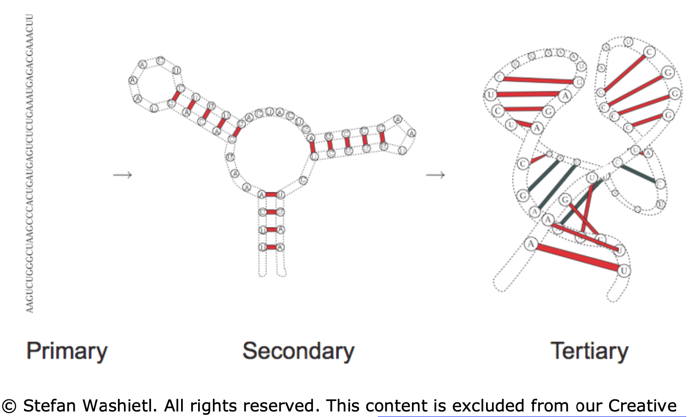
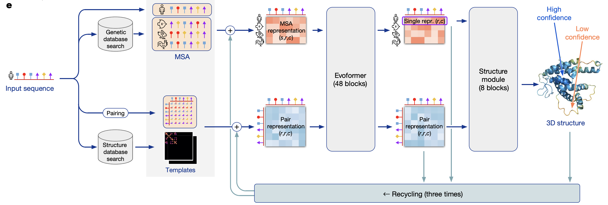

omics
view markdownsome papers involving proteins and ml, especially predicting protein structure from dna/rna
overview
vocabulary
- oligonucleotide = oligo = short single strands of synthetic DNA or RNA
data
- nucleic acid database (NDB)
- protein databank (PDB)
- rna
RNABase: an annotated database of RNA structures(2003) - no longer maintained-
[Accurate SHAPE-directed RNA structure determination PNAS](https://www.pnas.org/content/106/1/97) (deigan et al. 2009) - chemical probing
code
- rna
- Galaxy RNA workbench - many tools including alignment, annotation, interaction
- viennaRNA - incorporating constraints into predictions
- neural nets
rna structure prediction
rna basics
- rna does many things
- certain structures of RNA lend themselves to catalytic activities
- tRNA/mRNA convert DNA into proteins
- RNA also serves as the information storage and replication agent in some viruses
- rna components
- 4 bases: adenine-uracil (instead of dna’s thymine), cytosine-guanine
- ribose sugar in RNA is more flexible than DNA
- RNA World Hypothesis (Walter Gilbert, 1986) - suggests RNA was precursor to modern life
- later dna stepped in for info storage (more stable) and proteins took over for catalyzing reactions
- rna structure

- primary - sequence in which the bases are aligned - relatively simple, comes from sequencing
- secondary - 2d analysis of hydrogen bonds between rna parts (double-strands, hairpins, loops) - most of stabilizing free energy comes from here (unlike proteins, where tertiary is most important)
- most work on “RNA folding” predicts secondary structure from primary structure
- a lot of this comes from hydrogen bonds between pairs (watson-crick edge)
- other parts of the pairs (e.g. the Hoogsteen- / CH-edge and the sugar edge) can also form bonds
- tertiary - complete 3d structure (e.g. bends, twists)

- RNA-Seq - Wikipedia - RNA-Seq uses next-generation sequencing (NGS) to reveal the presence and quantity of RNA in a biological sample at a given moment, analyzing the continuously changing cellular transcriptome
algorithms
- computational bio book ch 10 (kellis, 2016)
- 2 main approaches to rna folding (i.e. predicting rna structure):
- (1) thermodynamic stability of the molecule
- (2) probabilistic models
- note: can use evolutionary (i.e. phylogenetic) data to improve either of these
- some RNA changes still result in similar structures
- consistent mutations - something mutates but structure doesn’t change (e.g. AU -> G)
- compensatory mutations - two mutations but structure doesn’t change (e.g. AU -> CU -> CG)
- incorporate similarities to other RNAs along with something like zuker algorithm
- thermodynamic stability - uses more domain knowledge
- dynamic programming approach: given energy value for each pair, minimize total energy by pairing up appropriate base pairs
- assumption: no crossings - given a subsequence $[i,j]$, there is either no edge connecting to the ith base (meaning it is unpaired) or there is some edge connecting the ith base to the kth base where $i < k \leq j$ (meaning the ith base is paired to the kth base)
- this induces a tree-structure to theh problem
- nussinov algorithm (1978)
- ignores stacking interactions between neighboring pairs (i.e. assumes there are no pseudo-knots)
- zuker algorithm (1981) - includes stacking energies
- assumption: no crossings - given a subsequence $[i,j]$, there is either no edge connecting to the ith base (meaning it is unpaired) or there is some edge connecting the ith base to the kth base where $i < k \leq j$ (meaning the ith base is paired to the kth base)
- dynamic programming approach: given energy value for each pair, minimize total energy by pairing up appropriate base pairs
- probabilistic approach - uses more statistical likelihood
- stochastic context-free grammer (SCFG) is like an extension of HMM that incorporates some RNA constraints (e.g. bonds must happen between pairs)
- 2 main approaches to rna folding (i.e. predicting rna structure):
- Recent advances in RNA folding - ScienceDirect (fallmann et al. 2017)
- algorithmic advances
- algorithmic constraints
- locality - restrict maximal span of base pairs
- add in bonus energies as hard or soft constraints
- rna-rna and rna-protein interactions - there are different algorithms for telling how 2 things will interact
- newer algorithms take into account some aspects of tertiary structure to predict secondary structure (e.g. motifs, nonstandard base pairs, pseudo-knots)
- algorithmic constraints
- representation
...((((((((...)). .)). .((.((...)). )))))).“dot-parenthesis” notation - opening and closing represent bonded pairs
- evaluation
- computing alignments is non-obvious in these representations
- centroids - structures with a minimum distance to all other structures in the ensemble of possible structures
- consensus structures - given a good alignment of a collection of related RNA structures, can compute their consensus structure, (i.e., a set of base pairs at corresponding alignment positions)
- algorithmic advances
- Folding and Finding RNA Secondary Structure (matthews et al. 2010)
- new work drops the assumption of no knots (e.g. crossings)
- project to topology (e.g. low/high genus) - e.g. projecting to a torus can remove crossings but still allow us to use dynamic programming
- RNA secondary structure prediction using deep learning with thermodynamic integration (sato et al. 2021)
- RNA-folding scores learnt using a DNN are integrated together with Turner’s nearest-neighbor free energy parameters
- DNN predicts scores that are fed into zuker-style dynamic programming
- RNA-folding scores learnt using a DNN are integrated together with Turner’s nearest-neighbor free energy parameters
3d rna structure prediction
- Geometric deep learning of RNA structure (townshend, …, dror 2021 - atomic ai + stanford, science)
- uses neural network as scoring mode (called ARES = Atomic Rotationally Equivariant Scorer)
- this gives energy function for (primary sequence, structure) pair
- architecture
- captures rotational + translational symmetries
- startup atomic ai works on this
- trained with only 18 known RNA structures
- uses only atomic coordinates as inputs and incorporates no RNA-specific information
- uses neural network as scoring mode (called ARES = Atomic Rotationally Equivariant Scorer)
- Review: RNA 3D Structure Prediction Using Coarse-Grained Model (li & chen, 2021)
- all-atom - more precise, each nucleotide models ~20 heavy atoms + ~10 hydrogen atoms - relatively rare
- coarse-grained - less precise
- steps
- input - RNA sequence + optinal secondary structure + more (e.g. distance between some atom pairs)
- sampling - includes discriminator (=scoring function = (potential) energy function = force field) and generator
- generator proposes new structures (e.g. MCMC)
- discriminator decides which is the most stable - 3 types of energy to consider
- output - sometimes pick lowest energy structure, somestimes cluster low-energy clusters and pick centroid
- all-atom structure reconstruction - the fragment matching algorithm (Jonikas et al., 2009a) is often used, followed by structure refinement to remove steric clashes and chain breaks
- 12 papers that differ slightly in these steps
- ex. graph-based: 2d structure mapped to a graph
- three open-source papers that yield all-atom structure
- IsRNA1: De Novo Prediction and Blind Screening of RNA 3D Structures (zhang et al. 2021)
- origina IsRNA (zhang & chen, 2018)
- iFoldRNA: three-dimensional RNA structure prediction and folding (sharma et al. 2008 )
- SimRNA (boiecki et al. 2016)
- IsRNA1: De Novo Prediction and Blind Screening of RNA 3D Structures (zhang et al. 2021)
protein structure prediction (dna)
protein basics
- the standard way to obtain the 3D structure of a protein is X-ray crystallography
- takes ~1 year & $120k to obtain the structure of a single protein through X-ray crystallography (source)
- alternative: nuclear magnetic resonance (NMR) spectroscopy
- on average, a protein is composed of 300 amino acids (residues)
- 21 amino acid types
- the first residue is fixed
- proteins evolved via mutations (e.g. additions, substitutions)
- fitness selects the best one
algorithm basics
- multiple-sequence-alignment (MSA) - alignment of 3 or more amino acid (or nucleic acid) sequences, which show conserved regions within a protein family which are of structural and functional importance
- matrix is (n_proteins x n_amino_acids)
- independent model (PSSM) - model likelihood for each column independently
- pairwise sites (potts model) - model likelihood for pairs of positions
- prediction problems
- contact prediction - binary map for physical contacts in the final protein
- common to predict this, evaluation uses binary metrics
- Evaluating Protein Transfer Learning with TAPE - given embeddings, 5 tasks to measure downstream performance (rao et al. 2019)
- tasks: structure (SS + contact), evolutionary (homology), engineering (fluorescence + stability)
- future: interactions between molecules (e.g. protein-protein, environment, highly designed proteins)
- contact prediction - binary map for physical contacts in the final protein
deep-learning papers
-
[De novo protein design by deep network hallucination Nature](https://www.nature.com/articles/s41586-021-04184-w) (anishchenko…baker, 2021) - deep networks trained to predict native protein structures from their sequences can be inverted to design new proteins
-
[Highly accurate protein structure prediction with AlphaFold Nature](https://www.nature.com/articles/s41586-021-03819-2) (jumper, …, hassabis, 2021) - supp
- best blog post (other blog post)
- model overview

- preprocessing
- MSA
- finding templates - find similar proteins to model “pairs of residues” - which residues are likely to interact with each other
- evoformer
- uses attention on graph network
- iterative
- structure model - converts msa/pair representations into set of (x,y,z) coordinates
- “invariant point attention” - invariance to translations and rotations
- MSA Transformer (rao et al. 2021) - predicts contact prediction
- train via masking
- output (contact prediction) is just linear combination of attention heads finetuned on relatively little data
- some architecture tricks
- attention is axial - applied to rows / columns rather than entire input
- EquiBind: Geometric Deep Learning for Drug Binding Structure Prediction
covid
- The Coronavirus Nucleocapsid Is a Multifunctional Protein (mcbride et al. 2014)
- coronavirus nucleocapsid = N protein
TIPs - using viruses for treatment
- videos
-
[Leor Weinberger: Can we create vaccines that mutate and spread? TED Talk](https://www.ted.com/talks/leor_weinberger_can_we_create_vaccines_that_mutate_and_spread?language=en#t-798841) - Engineering Viruses - Leor Weinberger - Gladstone Institutes 2016 Fall Symposium - YouTube
-
- 2 issues
- mutation - viruses mutate, our drugs don’t
- transmission - adherence / deployment - hard to give certain the drugs
- solution: use modified versions of viruses as treatment
- therapeutic interfering particles or TIPs are engineered deletion mutants designed to piggyback on a virus and deprive the virus of replication material
- TIP is like a parasite of the virus - it clips off some of the virus DNA (via genetic engineering)
- it doesn’t contain the code for replication, just for getting into the cell
- since it’s shorter, it’s made more efficiently - thus it outcompetes the virus
- TIP is like a parasite of the virus - it clips off some of the virus DNA (via genetic engineering)
- how do TIPs spread?
- mutations happen because the “copy machine” within a cell makes a particular mutation
- when a new virus comes along, it makes some of the mutated parts
- TIPs can’t replicate, so they take some of the mutated parts made by the new virus
- then, the TIP gets copied with the same mutation as the virus and this now spreads
- mutations happen because the “copy machine” within a cell makes a particular mutation
- therapeutic interfering particles or TIPs are engineered deletion mutants designed to piggyback on a virus and deprive the virus of replication material
- effect
- viral load will immediately be lower
- superspreaders can spread treatment to others
- can take before exposure as well (although harder to get approval for this)
- note: HIV mutates very fast so a TIP in a single person sees a lot of variants
- HIP also enters the genome (so corresponding TIP does this as well)
- Identification of a therapeutic interfering particle—A single-dose SARS-CoV-2 antiviral intervention with a high barrier to resistance (chaturvedi…weinberger, 2021)
- DIP = defective interfering particle = wild-type virus
- single administration of TIP RNA inhibits SARS-CoV-2 sustainably in continuous cultures
- in hamsters, both prophylactic and therapeutic intranasal administration of lipid-nanoparticle TIPs durably suppressed SARS-CoV-2 by 100-fold in the lungs, reduced pro-inflammatory cytokine expression, and prevented severe pulmonary edema
- TIP consists 1k - 2k bases
- hard to actually look at structure here (requires cryoEM)